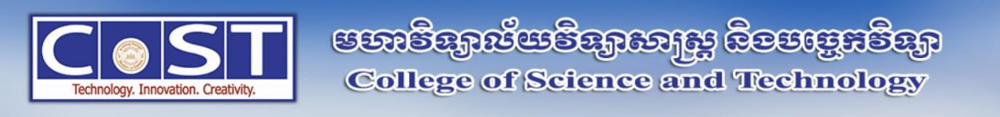
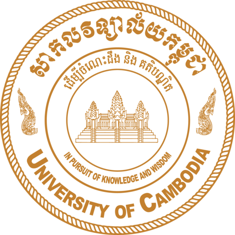
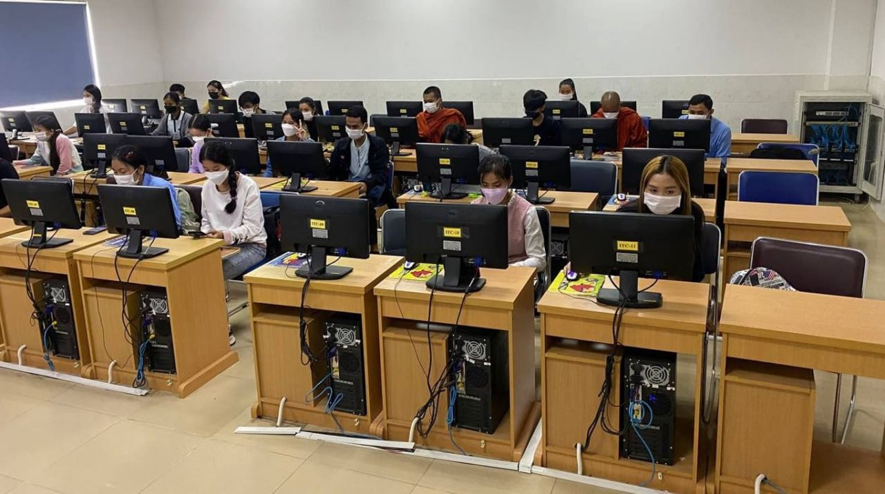
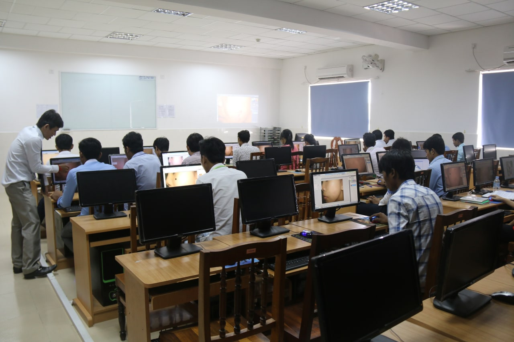

The University of Cambodia was established. It was officially opened by Prime Minister Samdech Techo Hun Sen on 23 June 2003. Originally located in three leased buildings just south of the Independence Monument, today the University is firmly established on over 3 hectares of land in the middle of Phnom Penh


IT is Information Technology
Computer Science is understanding how and why technologies work, exploring whether and how technology could solve real-life problems, investigating procedures, creating solutions, and learning about computing systems, programming, data, networks
Electronics and Telecommunication Engineeringequips students with a rigorous understanding of basic science and engineering concepts so that learners may acquire a full knowledge of computer architecture and microprocessors, VLSI and embedded systems, electromagnetic field theory, analog and digital